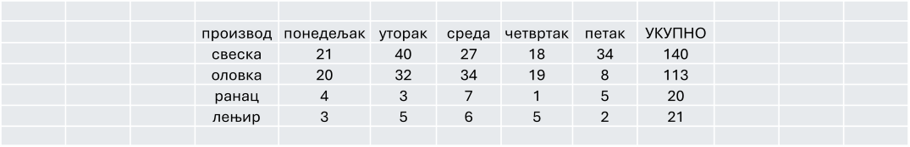
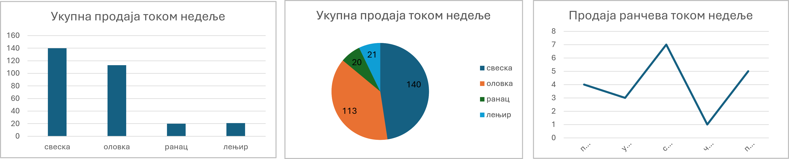

Представљање података¶
Обична табела¶
Најједноставнији начин да уредимо и прикажемо податке јесте да их прикажемо табелом. И када преузимамо већ прикупљене податке, они су најчешће у форми табеле. Редови представљају појединачне ставке (на пример производе, запослене или месеце), а колоне њихове особине (продата количина, остварен приход и сл.).
Табеле су посебно корисне када:
желимо да прикажемо прецизне вредности,
упоређујемо више категорија истовремено,
тражимо конкретан податак.
Узмимо за пример мало предузеће које продаје школски прибор. На крају недеље направљена је табела у којој пише колико је продато свезака, оловака, ранчева и лењира. Док су ти подаци само појединачни рачуни, тешко можемо да стекнемо утисак о продаји. Али када их саберемо и прикажемо у табели, лако долазимо до закључка који се производ највише продаје, а који најмање.
На пример: продато је 140 свезака, 113 оловака, 20 ранчева и 21 лењир. Све је јасно и прегледно на једном месту.

Графикони — подаци који се виде¶
Иако табела садржи тачне бројеве, много брже разумемо податке када их прикажемо као графикон.
Разликујемо неколико врста графикона. Основни и најчешће коришћени су:
Стубичасти графикон (column chart) нам омогућава да одмах уочимо који се производ најбоље продаје.
Пита (кружни) графикон (pie chart) показује колики је удео сваког производа у укупној продаји.
Линијски графикон (line chart) бисмо користили када бисмо пратили како се продаја мењала из недеље у недељу или из месеца у месец.


Поређење категорија → стубичасти графикон
Део у односу на целину → пита графикон
Промена кроз време → линијски графикон
Ако нисте сигурни - стубичасти графикон је скоро увек добар избор!